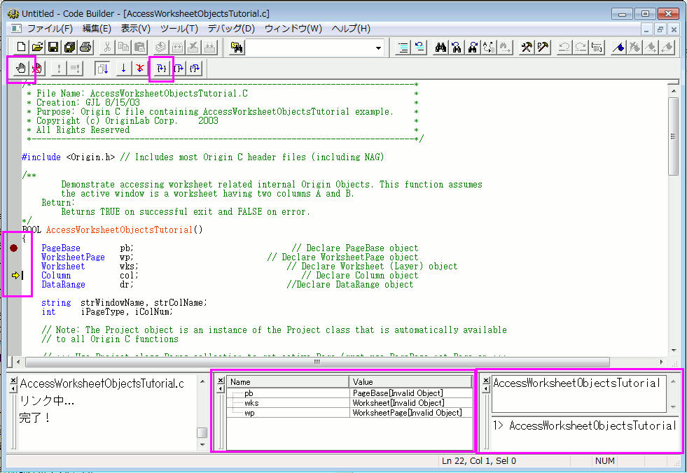

Origin CによるOriginの内部オブジェクトへのアクセス
サマリー
Originの内部オブジェクト (プロジェクトエクスプローラフォルダ、Originウィンドウ、レイヤ、プロット、図形オブジェクト、データセットなど) は、Origin Cのクラスを使ってアクセスすることができます。Originの内部オブジェクトにアクセスしたり、プログラムで制御するには、Origin Cオブジェクトに接続する必要があります。
Originの内部オブジェクトに接続するには、最初にプロパティ、メソッド、コンテナクラスのコレクションを使って、内部オブジェクトを探す必要があります。一般的なコンテナクラスには、Project, Folder, Page, GraphPage, Layer, GraphLayer, Worksheet, MatrixLayer, Collectionのクラスがあります。見つかったら、Originの内部オブジェクトと適切な型のOrigin Cオブジェクトを簡単に接続することができます。
そして、接続したOrigin Cオブジェクトのクラスのメソッドとプロパティを操作することで、プログラムでOriginの内部オブジェクトを制御することができます。このチュートリアルでは、特定のOriginの内部オブジェクトを見つけ、そのオブジェクトに接続し、接続したOrigin Cオブジェクトのメソッドとプロパティを操作することでオブジェクトにアクセスする方法のについて学習します。
必要なOriginのバージョン:Origin 8.1 SR1
学習する項目
このチュートリアルでは、以下の項目について説明します。
- ワークシート関連のオブジェクトにアクセスする
- グラフ関連オブジェクトにアクセスする
ワークシート関連のオブジェクトにアクセスする
特定のOriginの内部オブジェクトを理解しようとするとき、Origin C Projectクラス(Project.h), Collection クラス(Collection.h), Folderクラス(Folder.h)を熟知することが大切です。Origin CヘルプのOrigin C Reference: Classes を見たり、..\Origin\OriginC\system サブフォルダにあるヘッダファイルを見ることが役に立ちます。
このチュートリアルを始めるには
- 標準ツールバーで、新規プロジェクトボタン
 をクリックします。
をクリックします。
- 標準ツールバーで、コードビルダボタン
 をクリックします。
をクリックします。
- コードビルダのメニューで、ファイル：新規ワークスペースを選択します。
- コードビルダのメニューで、開くボタンをクリックします。
- Originフォルダの \Samples\Origin C Examples\Programming Guide\Introduction to Accessing Origin Objectsフォルダに移動し、AccessWorksheetObjectsTutorial.cを選択して、ワークスペースに追加チェックボックスを選択し、開くをクリックします。
- コードビルダツールバーで、すべてリビルドボタン
 をクリックします。これはファイルをコンパイルとリンクします。
をクリックします。これはファイルをコンパイルとリンクします。
- コードビルダの表示メニューで、LabTalkコンソール (コマンドと結果)および局所変数ウィンドウが表示されている(メニューにチェックが付いている)ことを確認します。
- コードビルダのメニューからツール：カスタマイズを選択します。ツールバータブを選択し、デバッグツールバーチェックボックスが選択されていることを確認します。
- コードビルダで、AccessWorksheetObjectsTutorial.cをアクティブにします。
- ファイルの上部に位置づけ、行をクリックします。
PageBase pb;
行のどこにでもカーソルを配置できます。
- コードビルダのメニューからデバッグ：ブレークポイントの挿入/削除を選びます。他の方法として、F9を押すか、デバッグツールバーのブレークポイントの挿入/削除ボタンをクリックします。
デバッグ用のブレークポイントがその行に設定されていることを示す茶色い円が左側の灰色の余白部分に表示されます。
- コードビルダワークスペースで、LabTalkコンソール(コマンド&結果)をアクティブにして、以下のように入力します。
AccessWorksheetObjectsTutorial
- ENTER キーを押して関数を実行します。
- デバッグツールバーで、ステップインボタンを押します。

- ステップインボタンを繰り返し押し、停止したら各ステートメントのコメントを読みます。停止、サイズ変更、位置変更を行い、ローカル変数ウィンドウに現在の各変数のランタイム値を表示します。
- 
グラフ関連オブジェクトにアクセスする
- Origin のワークスペースに戻り、標準ツールバーで、開くボタンをクリックします。
- Originフォルダの \Samples\Origin C Examples\Programming Guide\Introduction to Accessing Origin Objectsフォルダに移動し、AccessGraphObjectsTutorial.OPJを選択して、開くをクリックします。名前無しのプロジェクトへの変更を保存するかポップアップで尋ねられます。いいえをクリックすると、ワークシートとグラフが開きます。
- コードビルダのメニューで、ファイル：新規ワークスペースを選択します。ワークスペースの変更を保存するかどうか尋ねられたら、いいえをクリックします。
- コードビルダで、開くボタンをクリックします
- Originフォルダの \Samples\Origin C Examples\Programming Guide\Introduction to Accessing Origin Objectsフォルダに移動し、AccessGraphObjectsTutorial.cを選択して、ワークスペースに追加チェックボックスを選択し、開くをクリックします。
- すべてリビルドボタン をクリックしてファイルのコンパイルリンクを行います。
- コードビルダの表示メニューで、LabTalkコンソール (コマンドと結果)および局所変数ウィンドウが表示されている(メニューにチェックが付いている)ことを確認します。
- コードビルダのメニューからツール：カスタマイズを選択します。ツールバータブを選択し、デバッグツールバーチェックボックスが選択されていることを確認します。
- コードビルダワークスペースで、AccessGraphObjectsTutorial.cをアクティブにします。
- ファイルの上部に次の行を見つけ、クリックします。
GraphPage gp;
行のどこにでもカーソルを配置できます。
- コードビルダのメニューからデバッグ：ブレークポイントの挿入/削除を選びます。他の方法として、F9を押すか、デバッグツールバーのブレークポイントの挿入/削除ボタンをクリックします。
デバッグ用のブレークポイントがその行に設定されていることを示す茶色い円が左側の灰色の余白部分に表示されます。
- コードビルダのLabTalkコンソール(コマンド&結果ウィンドウ)をアクティブにして、次のように入力します。
AccessGraphObjectsTutorial
- ENTER キーを押して関数を実行します。
- デバッグツールバーで、ステップインボタンを押します。
- ステップインボタンを繰り返し押し、停止したら各ステートメントのコメントを読みます。停止、サイズ変更、位置変更を行い、ローカル変数ウィンドウに現在の各変数のランタイム値を表示します。
これでOriginの内部オブジェクトチュートリアルを終了します。